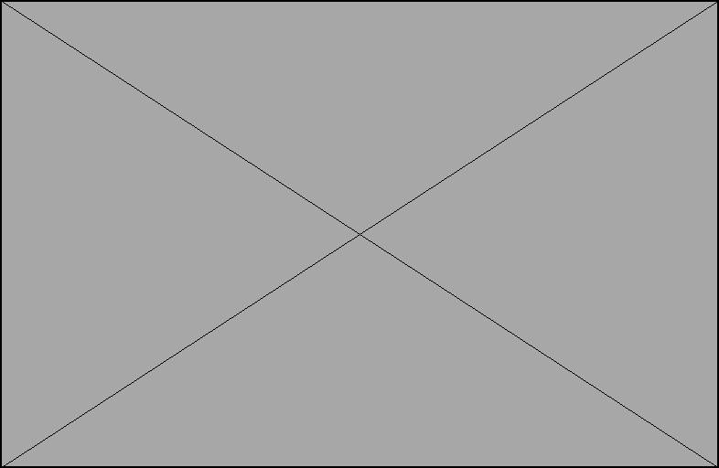

Hi! I'm Xinyi
I'm a fourth-year Math-CS and Cognitive Science major (Design and Interaction specialization) and a researcher at the XR Lab, and interned as a UX researcher at Transsion. I'm interested in using design and AI to make the sustainable choice. I enjoy thinking critically about a problem and helping teams turn ideas into clear, workable concepts.
My story

[My personal story of how I got into Math-CS and Cognitive Science, what I do at the XR Lab, what I learned as a UX researcher at Transsion, and what kind of work I want to do next.]
Skills
- [UX research]:
AB Test User experience - [Programming]:
C++ Java Python - [Design and prototyping]:
Figma Adobe Framer